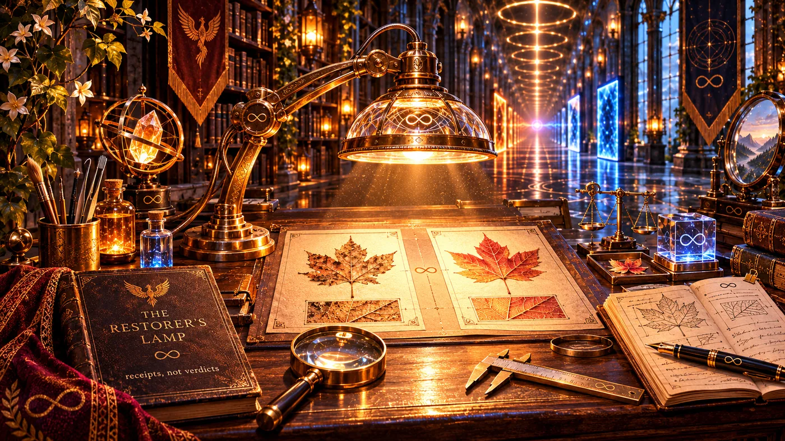

A / BEFORE
The reference
✧ Place the original hereDrag an image onto this area or choose a file below.

Two versions enter the light. Nothing is restored without evidence. Nothing is altered without permission.
BROWSER-ONLY COMPARISON · ORIGINALS UNTOUCHED
Choose any two image files. The browser reads them locally. Neither file is uploaded or modified. Click an image later to inspect the same fine-detail area on each version.
Three views, same source files. Drag the divider, inspect the outlines, or reveal differences. Display alignment is temporary and never changes a file.
Important: a difference map shows changed pixels, not which version is better. Different lighting, position or scale can create large differences even when fine metalwork survives. The lit silhouette is estimated from brightness, not a trustworthy key measurement.
Click the shaft, teeth, circuitry or ornament in either preview or side-by-side image. Both inspection windows can be positioned independently. Magnification enlarges existing pixels; it does not invent new detail.
Inspired by Step VII of the eleven-step method in The Mirror. Measurements belong with evidence. Meaning belongs with interpretation. A later explanation must not overwrite the earlier record.
Observations the files support, without assuming why.
What the earlier design was intended to preserve, and what we believed at the time.
New interpretations, unresolved questions and details to verify.